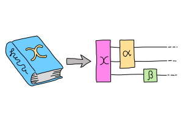
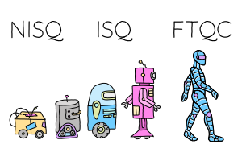
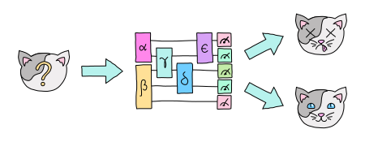
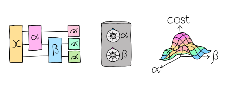

Quantum machine learning (QML) is a research area that explores the interplay of ideas from quantum computing and machine learning.
This goes in both directions. We can ask if the unique abilities of quantum computers can help us train machine learning models faster, or on quantum data where they are a better fit than classical models. On the other hand, classical machine learning can give us insights into quantum algorithms, let us estimate the properties of quantum systems, and even reveal new quantum error-correcting codes!
The two-way street
The success story of modern deep learning is also the story of hardware it runs on: the parallel GPUs and architectural innovations which allows an LLM, for instance, to learn on an internet-sized dataset. In QML, it is natural to start with the hardware at our disposal, namely noisy quantum circuits, and ask if the associated architecture is superior for certain tasks. This leads to a class of algorithms called variational quantum circuits (VQC).

On the other hand, we can use classical tools such as Fourier series and kernel learning to characterize quantum models. This provides important insights into their expressivity, generalization and training mechanics. This shows that QML really is a two-way street!
Performance from NISQ to ISQ
One advantage of vartional circuits is that they run on the devices we have now, and can be easily simulated. Because these devices and simulations are small, we cannot rely on theoretical arguments which only hold for very large quantum computers. Instead, we need to use benchmarks—performance on real datasets—to see how they stack up, as is standard practice in classical ML.

The quantum devices you can find in the lab right now are error-prone and modest in size. They can implement small VQCs and prove quantum advantage for other tasks, but we don't expect them to provide useful applications just yet. In the not-too-distant future, we hope these Noisy Intermediate-Scale Quantum (NISQ) computers will be replaced by Intermediate-Scale Quantum (ISQ) ones, which are small but fault-tolerant. Finding useful QML algorithms for these devices is an open problem.
Symmetry and inductive bias
If we defeat these constraints (on size and noise), we will be rewarded with the "holy grail": a Fault-Tolerant Quantum Computer (FTQC), where we can run large-scale quantum computations with negligible error. But even if we had such a device, what would we do with it? Variational circuits come from asking: what can we do with this hardware? The question now is: what do quantum computers do best? This is a very different beast.
Quantum complexity theory suggests that quantum computers are best at discovering hidden symmetries. The quantum computer queries multiple items, attaches a phase to each, and interferes these phases cleverly to extract the result. Shor's algorithm for breaking RSA is a famous example.

It turns out that quantum computers can use similar techniques to learn hidden symmetries from data. Many real-world problems display approximate symmetry, so we expect this not only to be fast, but useful! Turning things around, what does this teach us about quantum computing? Using tools from ML, it tells us they have an inductive bias, certain guesses they like to make more than others. Characterizing these biases will tell us what other problems quantum computers might be good at learning, and forms an exciting area for future research.
The geometry of programming
Symmetries are transformations which leave an object, often a geometric object, looking the same. Using ideas from geometry — particularly Lie algebras and fibre bundles — we can get insight into how to optimize the training of quantum models with symmetry. This leads to the field of geometric QML, which builds on classical ideas from geometric deep learning, and provides a different set of tools for thinking about inductive bias.

We can think of a QML model as a point — representing its parameters — on some higher-dimensional surface, with local symmetries that help optimize its cost. For quantum circuits, we perform this optimization using the parameter-shift rule, closely related to the Fourier series we mentioned above. But this approach is more general that QML. It represents an approach to building algorithms we call differentiable or geometric quantum programming.
PennyLane: the language of choice for QML research
PennyLane is an open-source software framework built around the concept of quantum geometric programming. It seamlessly integrates classical machine learning libraries with quantum simulators and hardware, and provides native support for parameter-shifts. It is purpose-built for training VQCs, but also has tools for extracting Fourier series and applying kernel methods.

For more advanced researchers, there is a benchmarching suite, noise modelling for NISQ, growing support for algorithm development in ISQ, and tools for learning hidden symmetries and inductive bias. For the geometrically inclined, PennyLane implements a wide variety of symmetries and knows how to optimize with them. In short, it's the language of choice for those interested in QML research!